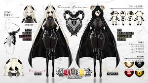

---------------------------------정보---------------------------------
성별:여성
생년월일:1991년 6월 30일
신체:144cm, G컵
국적:대한민국
MBTI:ENTP
오시마크:👁🗨안대 쓴 눈 | ♈염소뿔
반려견:뚜뚜
직업:유튜버, 치지직 스트리머
소속:브이퍼리
버츄얼 데뷔일:2024년 6월 15일 ( +318일째)
팬 애칭:선교단, 고티
---------------------------------방송역사---------------------------------
2014년 7월 6일에 아프리카TV에서 방송을 시작했으며 2015년 베스트BJ 달성
2016년 트위치TV로 플랫폼을 이적 후 트위치 파트너 달성
2022년 11월 19일 트위치에서 아프리카TV로 플랫폼을 이적하였으나 개인사정으로 방송을 잠정중단하였다.
2023년 2월 13일에 트위치로 방송 복귀하였다.
2023년 6월 8일 킥으로 테스트 방송을 하며 6월 20일 킥 파트너를 달성
2024년 6월 15일 치지직에서 퍼플슈가 하트소닉의 다섯번째 멤버로 데뷔를 하였다.
2024년 11월 25일 기업세에서 개인세로 전환하였다.
---------------------------------경력---------------------------------
관악FM 라디오 성우
대원미디어 애니메이션 작화 가이드 성우
순천향대학교 한국어 듣기평가 성우
아프리카TV 2015 리그오브레전드 레이디스 배틀 윈터 티저 성우
[아프리카TV] 2015 모바일게임 '백발백중' 설명공룡 성우
[7Day] 모바일 게임 '꽃미남 고등학교' 서진영役: 보기
[구름] 모바일 게임 '위드팡' 성우
[Class Happiness] 모바일 게임 비주얼 노벨 '행불행' 여주인공 이지아役 녹음 (견자희, 이초홍, 기미티 등 유명 방송인들이 성우진으로 있는 게임이다.) 보기
[룸익스케이프] 신촌 방탈출카페 '룸익스케이프' 여자 성우 녹음 보기
[리로디드스튜디오] PC게임 'The Day' 여자 성우 (참고로 남자 성우는 유준호가 맡았다.)
[System AIVY Translation] PC게임 'AIVY' 베나 성우 보기
[Class Happiness] 모바일 게임 비주얼 노벨 '하트 프로텍터' 여주인공 기연役 녹음 (기미티, 유준호, 대하 등이 함께 성우진으로 있는 게임이다.)
상명대학교 졸업작품 나레이션 성우
국민대학교 졸업작품 성우 (영문)
[BH소프트] ARS성우 및 출결인증앱 성우 (유준호 와 함께 작업했다.)
SKT 꿀보이스코리아 대국민 오디션 최종 3인
[Studio HG] 메탈릭 차일드 'METALLIC CHILD' 1차 트레일러 영상 성우
[팡팡에듀] 인형극 '우당탕탕 아이쿵' 라미役
[팡팡에듀] 인형극 팥죽할멈과 호랑이 할머니役
[블루게임즈] 모바일 게임 헬릭스 어드벤쳐 성우
[노블게임즈] 모바일 게임 '토탈삼국' 여자 성우 (참고로 남자 성우는 유준호가 맡았다.)
[데베스프레소] PC게임 '더코마2 비셔스' 시스터즈 성우
[Studio HG] 메탈릭 차일드 2차 트레일러 영상 성우
[투스라이프] 투네이션 고객센터 ARS 성우
각종 이러닝 외 다수